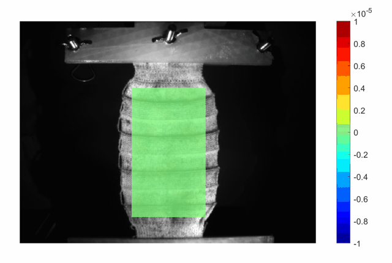
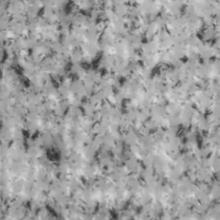
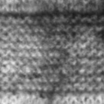

Elephant skin is a remarkable soft tissue — wrinkled, anisotropic, and tough. Using digital image correlation, I measured its full-field deformation under load to build intuition for soft-tissue mechanics that informs biomimetic materials and robotics.

Biological soft tissues solve mechanical problems that engineered materials struggle with — large reversible deformation, direction-dependent stiffness, and structural toughness all at once. Elephant skin is an extreme, accessible case study. Characterizing how it strains under load gives the Geometry of Materials Lab a reference point for designing programmable, biomimetic materials and the soft structures used in robotics.
DIC tracks a high-contrast speckle pattern across video frames to reconstruct full-field displacement and strain — no physical gauges touching the specimen. I prepared specimens, applied speckle patterns, ran tensile tests, and processed the imagery into engineering strain fields:
The strain fields reveal pronounced spatial heterogeneity — strain concentrates around wrinkles and structural features rather than distributing uniformly, and the response stiffens and shifts across loading cycles. These full-field measurements are exactly the kind of ground-truth data needed to validate constitutive models of soft tissue and to design materials that reproduce its behavior.


Optical strain measurement became a core experimental skill I carry into every soft-systems project — from knitted ExoSkins to soft actuators. Understanding how compliant, anisotropic materials actually deform under load is the throughline connecting this work to my research in wearable robotics and therapeutic devices.